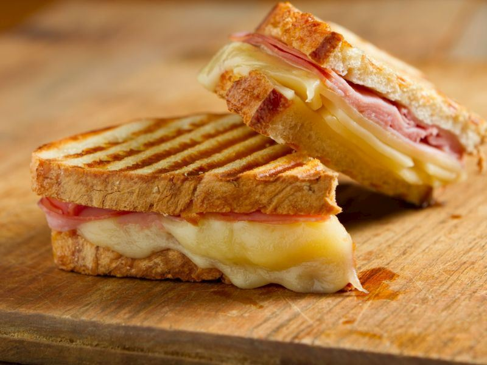

Atom Tost

Bugünün tarifi olan Atom Tost için gerekli malzemeler ve yapılış tarifi:
- 2 Tost Ekmeği
- Tercihe bağlı Sosis/salam
- Kaşar Peyniri
- Domates
- Öncelikle sosis veya salamımızı tost makinesinde pişiriyoruz.
- Sonrasında iki tost ekmeği arasına dilimlenmiş kaşar peynirimizi ve sosis/slamımızı koyuyoruz.
- Tostumuzu tost makinasında pişirdikten sonra dilimlere bölüyoruz.
- Tabağa sunumu hazırlayarak tostunuzu koyunuz.